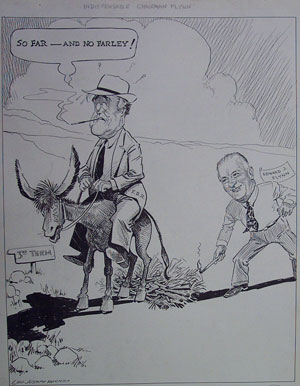
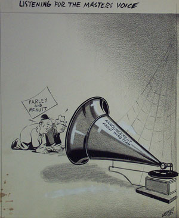

|

|

|
| The Indispendable Chairman Flynn by Leo Joseph Roche | Listening for the Master's Voice by Werner |
"The Indispensable Chairman Flynn" refers to Edward Flynn, who stepped in to run FDR's campaign when James A. Farley, his campaign manager in the 1932 and 1936 elections, refused to do so. Farley, a close friend from the start of FDR's career, did not support FDR's bid for a third term but allowed his own name to go before the Democratic convention in 1940. This created a rift that lasted the rest of their lives, although Farley continued to be close to First Lady Eleanor Roosevelt.
Like "The Indispensable Chairman Flynn," "Listening for the Master's Voice" refers to two members of the Democratic Party: Farley and Paul McNutt, both of whom had a personal interest in FDR's decision about a third term. However, neither man could act until he made his intentions clear. The staging of this cartoon, with a Victrola, and the two men on their hands and knees, recalls the iconic RCA Victor advertisement where a dog listens to a recording of his master's voice. The cobwebs allude to the fact that FDR did not make his decision quickly.
Previous Next